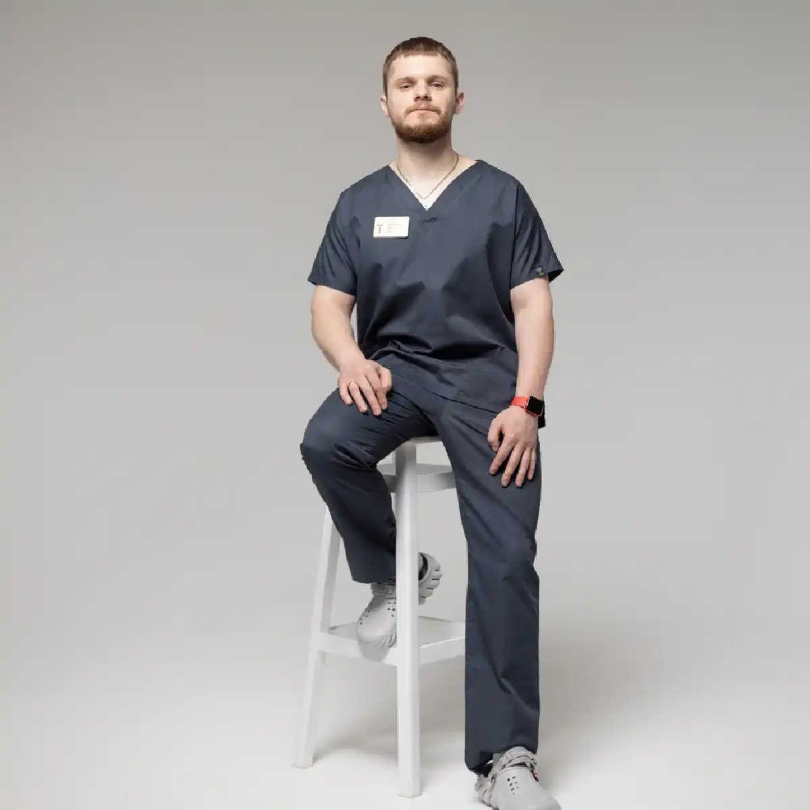

+38(068) 79 72 782
+38(068) 79 72 782Крапельниця від екстазі (МДМА) Харків
Ранок без болі і страху починається сьогодні


Безкоштовна консультація, працюємо цілодобово 24/7
Ранок без болі і страху починається сьогодні

Дата написання: 7 вер. 2025 р.
Останнє оновлення: 2 жовт. 2026 р.
Крапельниця після екстазі в Харкові може бути частиною медичної допомоги при погіршенні стану після вживання МДМА. Однак інфузійна терапія потрібна не кожному пацієнту: її призначають після огляду, оцінки симптомів і, за необхідності, лабораторних досліджень. Основне завдання лікування — виявити небезпечні порушення та стабілізувати стан людини. Звернення по допомогу починається з консультації нарколога в Харкові та визначення терміновості ситуації. При відносно стабільному самопочутті лікар вирішує, яке обстеження та спостереження необхідне. При судомах, втраті свідомості, порушенні дихання, болю в грудях, вираженому перегріві або сплутаності свідомості слід одразу телефонувати 103 або 112. Очікувати домашню крапельницю в таких випадках небезпечно.
Після вживання екстазі можуть виникати тривожність, рухове збудження, пітливість, нудота, сухість у роті, прискорене серцебиття та труднощі із засинанням. Можливі напруження жувальних м’язів, стискання щелеп, тремор та підвищена чутливість до навколишніх подразників. Коли гостра дія слабшає, деякі люди відзначають втому, зниження настрою та труднощі з концентрацією. Лише за відчуттями неможливо визначити тяжкість інтоксикації. Для звернення до лікаря достатньо посилення симптомів, незвичайної поведінки або відсутності очікуваного покращення. Під час розмови з фахівцем важливо повідомити час вживання та все, що людина приймала додатково. При вираженому погіршенні може знадобитися термінова наркологічна допомога в Харкові.
Небезпечний стан після екстазі не завжди пов’язаний із завідомо великою дозою. Склад таблетки може бути невідомим, а реакція організму — відрізнятися від попередніх епізодів вживання. Тому орієнтуватися потрібно на стан людини, а не на кількість прийнятих таблеток. Негайний виклик швидкої допомоги необхідний при втраті свідомості, судомах, порушенні дихання, сильному болю в грудях, вираженій дезорієнтації або різкому погіршенні самопочуття. Висока температура із збудженням, м’язовим напруженням та сплутаністю також потребує екстреної оцінки. Не потрібно чекати появи всіх перелічених ознак: одного небезпечного симптому достатньо, щоб зателефонувати 103 або 112.
Припиніть фізичне навантаження та, якщо це безпечно, допоможіть людині перейти у прохолодне, провітрюване місце. Залишайтеся поруч, зменште шум та яскраве світло, розмовляйте спокійно. При перегріванні зніміть зайвий одяг, використовуйте обдування та прохолодні вологі рушники, одночасно виконуючи вказівки диспетчера швидкої допомоги. Не давайте алкоголь, енергетики, нові психоактивні речовини або випадкові ліки. Не змушуйте людину випивати багато води та не викликайте блювання. При сонливості, сплутаності свідомості або порушенні ковтання нічого не давайте через рот. Якщо людина непритомна, але нормально дихає, поверніть її на бік. Якщо нормального дихання немає, починайте серцево-легеневу реанімацію за вказівками диспетчера. При судомах приберіть небезпечні предмети, захистіть голову від ударів, не утримуйте кінцівки та нічого не вкладайте до рота.
МДМА впливає на нейромедіаторні системи, що беруть участь у регуляції настрою, збудження та вегетативних функцій. На тлі вживання можуть частішати пульс, підвищуватися артеріальний тиск, посилюватися тривожність і рухове збудження. Після ослаблення дії речовини можливі втома, дратівливість та емоційний спад. При зверненні по допомогу важливо розповісти лікарю про захворювання серця, епізоди аритмії, тривожні розлади та постійну терапію. Біль у грудях, непритомність або виражені перебої в роботі серця не можна пояснювати виключно панікою: у такій ситуації потрібне термінове обстеження та медична допомога після вживання наркотиків.
Перегрів після екстазі особливо небезпечний при фізичній активності у спекотному або задушливому приміщенні. Значне підвищення температури може супроводжуватися пошкодженням м’язів та порушенням роботи внутрішніх органів. Цей стан потребує негайної медичної допомоги. Не слід чекати, поки людина «охолоне сама», або розраховувати на звичайний жарознижувальний препарат як на достатнє лікування. При гарячій шкірі, вираженому збудженні, сплутаності або різкій слабкості необхідно викликати швидку допомогу та розпочати доступне зовнішнє охолодження. Домашня крапельниця не замінює лікування небезпечного перегріву.
Після МДМА можливі різні порушення водного балансу. В одного пацієнта переважає втрата рідини, в іншого — затримка води та зниження концентрації натрію в крові. Тому сухість у роті або слабкість самі по собі не означають, що людині обов’язково потрібен великий обсяг інфузії. Для вибору допомоги лікар уточнює, скільки рідини було випито, чи були пітливість і блювання, як часто пацієнт мочився. При підозрі на електролітні порушення необхідні аналізи. Крапельниця від наркотиків призначається з урахуванням виявлених порушень, а не лише факту вживання речовини.
Спроба «промити організм» великою кількістю води може погіршити стан. Після МДМА виведення води може порушуватися, а надмірне пиття — додатково знижувати концентрацію натрію. Виражена гіпонатріємія небезпечна для головного мозку. Головний біль, нудота та погіршення стану після рясного пиття потребують медичної оцінки; при сплутаності свідомості або судомах потрібна швидка допомога. Не слід змушувати людину пити літрами або самостійно виправляти передбачуваний дефіцит натрію сіллю. Обсяг рідини та необхідність лікування визначає лікар.
При тривозі після екстазі корисно забезпечити спокійну обстановку та присутність тверезої людини. Не потрібно сперечатися з пацієнтом, соромити його або залишати самого, якщо він наляканий і погано контролює свій стан. Наркологічна допомога в Харкові необхідна, якщо тривога посилюється, заважає спілкуванню, супроводжується незвичайною поведінкою або не дозволяє людині заспокоїтися. При болю в грудях, порушенні дихання, перегріві або сплутаності не можна вважати те, що відбувається, звичайною панічною атакою. У таких випадках потрібна екстрена медична оцінка.
При скаргах на безсоння лікар уточнює час вживання, тривалість неспання, наявність тривоги та прийом інших речовин. Важливо розповісти, чи намагався пацієнт заснути за допомогою алкоголю, снодійних або заспокійливих. Тактика залежить від результатів оцінки. Іноді основну увагу приділяють умовам для відпочинку та подальшому спостереженню, в інших випадках потрібне лікування під медичним контролем. Якщо відсутність сну супроводжується галюцинаціями, дезорієнтацією, вираженим збудженням або небезпечною поведінкою, необхідна екстрена допомога при наркотичній інтоксикації. Не слід призначати собі препарати за попередніми рекомендаціями або порадами знайомих.
При серцебитті після МДМА необхідно оцінювати не лише показники пульсу, а й супутні симптоми. Лікарю важливо знати, чи є біль у грудях, задишка, запаморочення, переднепритомний стан або відчуття нерегулярного ритму. Вимірювання тиску вдома може дати корисну інформацію, але не замінює огляду та електрокардіограми при відповідних скаргах. Не варто самостійно приймати додаткові дози гіпотензивних або серцевих препаратів. Якщо стан погіршується, з’являються непритомність, біль у грудях або утруднення дихання, слід викликати швидку допомогу.
Перед призначенням інфузії лікар з’ясовує обставини вживання, скарги, хронічні захворювання, алергії та постійну терапію. Окремо уточнюється кількість випитої рідини та можливе поєднання екстазі з алкоголем, ліками або іншими наркотиками. Огляд допомагає визначити терміновість допомоги та допустимий формат лікування. Рішення про крапельницю має враховувати стан пацієнта, а не лише його бажання «прокапатися». Якщо для безпечного призначення потрібні аналізи або постійний моніторинг, лікар направляє пацієнта до закладу, де це можливо. При стабільному стані може розглядатися виклик нарколога додому в Харкові.
При підозрі на ускладнення лікар може призначити визначення натрію, калію, глюкози, показників функції нирок та печінки. При м’язовому болю, перегріві або темній сечі може знадобитися дослідження креатинкінази. При серцебитті та інших серцевих скаргах використовують ЕКГ. Обсяг обстеження визначають за клінічною картиною. Не кожному пацієнту потрібен однаковий набір досліджень. При цьому експрес-тест на наркотики не замінює оцінки небезпечних порушень і не повинен затримувати необхідну допомогу. Навіть негативний результат тесту не є достатньою підставою, щоб виключити інтоксикацію.
Склад крапельниці після МДМА залежить від виявленої проблеми. За наявності показань лікар обирає інфузійний розчин, його обсяг та швидкість введення. Ліки для корекції окремих симптомів призначаються окремо і не обов’язково вводяться в складі однієї інфузії. Універсальний набір «для очищення крові» не дозволяє врахувати всі можливі ускладнення. Вітаміни та препарати, які рекламуються як засоби для підтримки органів, не слід представляти як обов’язковий компонент допомоги кожному пацієнту. Перед процедурою пацієнт має право уточнити, для чого призначений кожен препарат і як контролюватиметься результат. Склад крапельниці від наркотичної інтоксикації завжди визначається індивідуально.
Однакові скарги не завжди мають однакову причину. Слабкість, нудота та головний біль можуть потребувати різних рішень, тому вибір розчину без оцінки стану небезпечний. Значення мають результати обстеження, випита рідина та супутні захворювання. Принцип «чим більше крапельниць, тим краще» тут не застосовується. Пацієнту не слід самостійно збільшувати обсяг інфузії, повторювати процедуру або використовувати схему іншої людини. При підозрі на порушення натрію корекція потребує особливо уважного лабораторного контролю.
Обіцяти швидке виведення МДМА за допомогою звичайної крапельниці некоректно. Інфузійна терапія призначається для вирішення конкретних медичних завдань, а не як гарантований спосіб припинити дію речовини. Покращення самопочуття також не підтверджує, що всі ризики вже усунені. Не слід намагатися посилити «очищення» сечогінними, рясним питтям, сауною або фізичними навантаженнями. Безпечна мета звернення — оцінка стану та лікування виявлених порушень. Детоксикація після МДМА має проводитися з урахуванням клінічного стану пацієнта. Рішення про завершення спостереження приймають за станом пацієнта, а не за кількістю введених флаконів.
Допомога починається з визначення терміновості ситуації. Лікар уточнює, що сталося, проводить огляд та вирішує, чи потрібна госпіталізація. Потім призначаються необхідні обстеження та лікування з урахуванням виявлених порушень. У процесі надання допомоги оцінюють динаміку стану. Перед завершенням спостереження пацієнту пояснюють подальші дії: чи потрібен повторний огляд, які призначення слід виконувати та при яких симптомах звертатися негайно. Зрозумілі рекомендації важливі не менше за саму процедуру. За необхідності проводиться лікування наркотичної інтоксикації в Харкові з подальшим спостереженням.
Можливість допомоги вдома в Харкові визначається після оцінки стану. Сам факт вживання екстазі не означає, що домашня інфузія необхідна або допустима. Навіть при зовні спокійній поведінці можуть знадобитися обстеження, які неможливо повноцінно виконати за адресою пацієнта. Виклик нарколога додому в Харкові можна обговорювати при стабільному стані та відсутності ознак, що потребують екстреної допомоги. При підозрі на електролітні порушення, перегрів або серцеві ускладнення пріоритет має обстеження в медичному закладі. Не слід заздалегідь замовляти крапельницю як обов’язкову процедуру.
Стаціонар необхідний, коли пацієнту потрібні безперервне спостереження, повторні аналізи або лікування небезпечних ускладнень. Підставами для екстреної госпіталізації можуть стати судоми, порушення свідомості, виражений перегрів, проблеми з диханням або серцевою діяльністю. Питання про госпіталізацію також слід вирішувати при повторному блюванні, помітному зменшенні сечовипускання, темній сечі, вираженому м’язовому болю та наростаючій слабкості. Повідомте лікаря про всі зміни, навіть якщо вони з’явилися вже після ослаблення основної дії речовини. У таких ситуаціях може знадобитися наркологічний стаціонар у Харкові.
Одночасне вживання кількох речовин ускладнює оцінку інтоксикації та може посилювати несприятливі ефекти. Лікарю необхідно знати не лише про екстазі та алкоголь, а й про стимулятори, енергетики, знеболювальні, антидепресанти та інші ліки. Не слід приховувати ці відомості через побоювання осуду. При поєднанні речовин симптоми можуть відрізнятися від очікуваних. Якщо людина стає незвично сонливою, втрачає орієнтацію, перегрівається або скаржиться на біль у грудях, необхідна термінова оцінка. При повторному вживанні кількох речовин після стабілізації варто обговорити лікування наркотичної залежності.
Спроба самостійно «погасити» дію екстазі ліками може ускладнити подальшу оцінку стану. Особливо важливо враховувати алкоголь, вже прийняті препарати та невідомий склад речовини. У медичній практиці засоби для зменшення збудження можуть застосовуватися за показаннями, але вибір препарату потребує контролю стану пацієнта. Не потрібно повторювати чужу схему, підвищувати дозу через відсутність швидкого ефекту або поєднувати кілька заспокійливих. Якщо препарат уже прийнято, повідомте лікарю його назву, дозування та час прийому.
Тривалість допомоги визначається тяжкістю стану та необхідністю спостереження. Час введення розчину та загальна тривалість лікування — різні речі. Завершення крапельниці не завжди означає, що пацієнт може залишатися без контролю. При першому зверненні неможливо обґрунтовано гарантувати відновлення за годину або за одну процедуру. Після огляду лікар зможе пояснити попередній план, а потім скоригувати його за результатами обстеження та динамікою симптомів.
При оцінці відновлення враховують характер вживання, поєднання речовин, тривалість неспання, загальний стан здоров’я та виниклі ускладнення. Тому порівнювати свій стан із досвідом іншої людини ненадійно. Подальші рекомендації мають відповідати результатам огляду. До відновлення слід уникати повторного вживання, алкоголю та спроб компенсувати слабкість стимуляторами. Якщо зберігаються порушення сну, тривога, зниження настрою або труднощі зі звичайними справами, необхідна повторна консультація нарколога.
Повторне погіршення потребує нової оцінки. При появі судом, порушенні свідомості, болю в грудях, утрудненні дихання або вираженому перегріві необхідно одразу викликати 103 або 112. Не слід чекати зв’язку з лікарем, який проводив попередню процедуру, якщо ситуація виглядає невідкладною. При менш виражених скаргах зв’яжіться з лікарем, який проводить лікування. Підготуйте відомості про введені препарати, результати аналізів та час появи нових симптомів. Самостійно повторювати крапельницю або додавати ліки не потрібно.
При зверненні по анонімну наркологічну допомогу в Харкові пацієнт може заздалегідь уточнити умови конфіденційності, порядок оформлення та способи зв’язку. Важливо розуміти, які дані знадобляться для консультації та подальшого лікування. Конфіденційний формат має сприяти відкритій розмові з лікарем. Для вибору безпечної тактики необхідно чесно повідомити про вжиті речовини та ліки. При небезпечних симптомах з’ясування організаційних питань не повинно затримувати виклик швидкої допомоги.
Вартість крапельниці від екстазі в Харкові починається від 2499 грн.
Щоб викликати нарколога після вживання МДМА, при зверненні слід повідомити адресу в Харкові, вік пацієнта, основні скарги, приблизний час вживання екстазі та відомості про інші прийняті речовини або лікарські препарати. Якщо вдалося виміряти температуру тіла, артеріальний тиск та пульс, ці показники також бажано передати фахівцю. Важливо уточнити, чи перебуває людина при свідомості, чи зберігається нормальне дихання, чи були судоми, біль у грудях, виражене збудження або інші незвичайні симптоми. Ці відомості допомагають попередньо оцінити тяжкість стану та визначити відповідний формат медичної допомоги. При стабільному стані можна узгодити терміновий виклик нарколога в Харкові та проведення огляду вдома. Якщо з’являються втрата свідомості, судоми, порушення дихання, сильний біль у грудях, виражений перегрів або сплутаність свідомості, потрібна екстрена медична допомога — очікувати приватного виїзду в такій ситуації не слід.
Після стабілізації варто обговорити з наркологом характер вживання. Приводами для подальшої допомоги є повторювані епізоди, виражений потяг, втрата контролю, невдалі спроби відмовитися від вживання та наслідки для роботи, навчання або стосунків. Лікування наркоманії в Харкові планують після оцінки стану та потреб людини. На консультації можна обговорити лікування залежності від екстазі, психотерапевтичну допомогу, роботу із ситуаціями, що провокують вживання, та підтримку близьких. Усунення гострих симптомів автоматично не вирішує проблему повторного вживання, тому подальші кроки краще визначити до повернення до звичного способу життя.
Телефон для консультації та виклику нарколога додому в Харкові: +38(050-021-69-57)

Статтю перевірено експертом
Робулець Ольга
Лікар-нарколог, ординатор
Можливо цікава стаття:
Як формується наркотична залежність

Так, ми суворо дотримуємося повної конфіденційності на всіх етапах лікування. Інформація про пацієнта, діагноз та проходження терапії не передається третім особам. Звернення до нас не тягне за собою постановку на облік. Ви можете бути впевнені у безпеці та анонімності.
Програма лікування розробляється індивідуально після консультації з фахівцем. Враховуються вид залежності, її тривалість, фізичний та психологічний стан пацієнта. Такий підхід дозволяє підвищити ефективність терапії та знизити ризик зриву. Ми не використовуємо шаблонні рішення.
Так, ми супроводжуємо пацієнтів і після основного курсу лікування. Проводяться консультації, рекомендації щодо адаптації та профілактики рецидивів. За потреби можлива подальша психологічна підтримка. Це допомагає зберегти результат та повернутися до повноцінного життя.
Анонимно

Ну в хлопців просто золоті руки й світла голова, мене капали Олексій та Владислав, буквально за декілька сеансів я наче заново народився, до цього пив більше 3х тижнів, не міг зупинитись, дуже радий що знайшов саме цих спеціалістів, всім рекомендую
Анонимно
В течение нескольких лет я злоупотреблял алкоголь, что привело к увольнению с работы и вызвало у меня мысли о суициде. Понимая, что такой образ жизни неприемлем, я обратился за помощью в клинику “Амбрела”. Здесь я смог преодолеть свою зависимость от спиртного благодаря заботливым и опытным врачам, а также эффективной системе лечения. Спустя более года я полностью избавился от желания употреблять алкоголь, и теперь моя жизнь вернулась в норму. Я даже не приближаюсь к спиртному! Благодарю врачей клиники “Амбрела” за их помощь и заботу.
Анонимно
Я обращался за помощью в различные клиники, пытаясь избавиться от своей зависимости от алкоголя, но без особых успехов. Никак не мог справиться с желанием прибегнуть к бутылке, пока друг не посоветовал мне обратиться в центр “Амбрелла”. Я записался на прием и был поражен заботливым отношением к пациентам. Уже прошло два года, и теперь я смотрю на алкоголь с абсолютной равнодушием, активно занимаюсь спортом и улучшил отношения в семье. Благодаря центру “Амбрелла” моя жизнь была спасена от алкогольной зависимости!
Анонимно
Хочу выразить свою благодарность врачам из центра алкоголизма “Амбрела” за то, что они буквально спасли мою жизнь. В течение последнего года я сильно увлекался питьем, и все это привело к катастрофическим последствиям. Хотя я ходил на терапевтические сеансы, но безрезультатно. Тогда я нашел адрес клиники “Амбрела” в интернете, изучил отзывы и информацию о центре, и записался на прием. Там мне сразу предложили методику лечения, которая помогла не только справиться с физической ломкой, но и психической зависимостью от алкоголя. Не буду распространяться, скажу только одно - после пребывания в этой клинике я стал другим человеком, и навсегда забыл, что такое привкус алкоголя. Больше меня не тянет на это! Я искренне верю, что в центре “Амбрела” трудятся настоящие целители душ!
Анонимно
После сложного развода мой сын начал подавлять свою обиду и горе употреблением алкоголя. Он старался скрывать это от меня, но я, как мать, почувствовала, что что-то не так. В конечном итоге, ситуация стала критической. Моя знакомая посоветовала мне обратиться в клинику “Амбрела”. Я была приятно удивлена их работой! Они помогли сыну преодолеть очередной период злоупотребления алкоголем, и с тех пор прошел уже более года, и он совсем не пьет.
Анонимно
Благодаря вашей помощи, моя семья была спасена. Я с трудом уговорила мужа начать лечение, и последний каплей был пьяное ДТП. К счастью, в аварии никто не пострадал, но это был для него сигнал к действию. Он наконец согласился пройти курс лечения на дому, в стационар не хотел ложиться. Лечение было трудным, и были моменты, когда срыв был настолько близок, но благодаря вашему центру Амбрелла мы справились с этим.
Анонимно
Для меня эта клиника стала настоящим спасением! Долгое время я упорно отказывался от лечения, уверен был, что со мной все в порядке. Но к счастью, семья уговорила меня попробовать. И сегодня я чувствую себя невероятно счастливым, осознавая, что мне абсолютно не нужен алкоголь. Огромное спасибо за помощь и поддержку, которые я получил здесь! Я благодарен вам за новую возможность жить полноценной и счастливой жизнью!
Анонимно
Выражаю благодарность ребятам, которые оказали мне помощь и не отвернулись. Уже 10 месяцев я остаюсь чистой. Благодарю за то, что помогли найти новый путь в моей жизни.
Номер телефону:
+380 (68) 797 27 82
+380 (50) 021 69 57
Адресу наркологічного центра вашого міста уточнюйте за
телефоном
Працюємо: Київ, Одеса, Львів, Харків, Дніпро, Запоріжжя,
Черкасах, Чугуєві, Чорноморську, Кам'янському
Telegram: t.me/umbrellaplus
Графік работы: Цілодобово